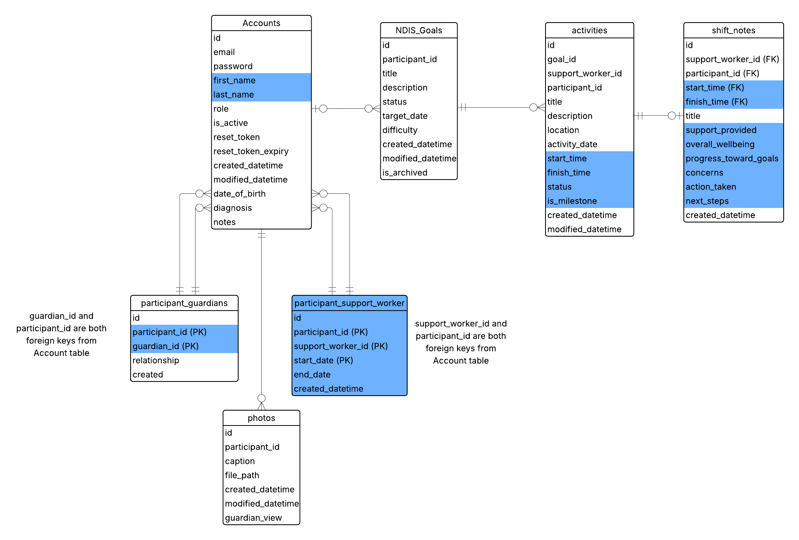
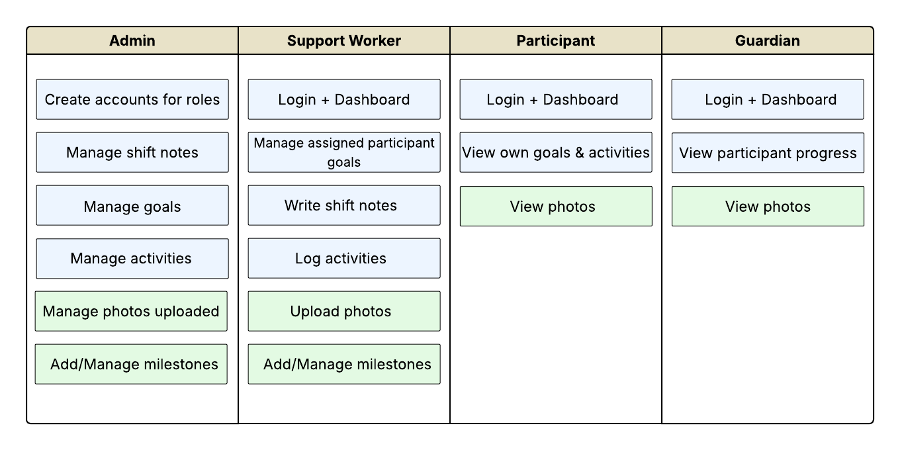

What is CORE Transitions?
A Queensland-based disability services org supporting young adults through life skills, travel, and employment programs. When we got the brief, they had no digital platform. Participants couldn't view their goals, guardians had zero visibility, and everything ran on manual processes.
Four very different users. One system.
The hard part wasn't the tech. It was designing. A participant needs something simple and encouraging. A guardian just needs to peek in. A support worker needs speed. An admin needs full control.
The client also came in with big ideas: gamification, badges, milestone rewards. Part of my job was having honest conversations about what was achievable in a semester, and documenting what stayed in scope vs what became future state.
From first meeting to final handover
What I made
Click the cards with a preview to explore them.


What we shipped
A fully working NDIS portal signed off by the client, giving all 4 user types a tailored experience for the first time.